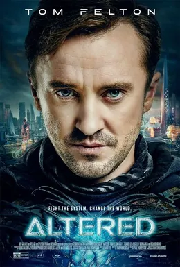

The genetics
The premise is a society divided by genetic enhancement: the enhanced form the mainstream, and the unenhanced are pushed to the margins, an idea familiar from GATTACA. The story appears to follow those left behind as they fight for equality, which places genetic inequality and discrimination at the heart of the film. The only available source is a one-sentence synopsis, so it is not known what the enhancements consist of, who provides them, or how the film portrays the scientists or companies behind them. Real gene editing of human embryos for enhancement is banned or tightly restricted in most countries, and most traits people would want to enhance depend on many genes and on environment, but the film's worry about access and inequality echoes real ethical debates.
How genetics is portrayed
- Overall portrayal of genetics
- negative The premise frames enhancement as the source of an unjust divide that the protagonists revolt against; the sources say nothing about the people who provide it.
- Outcome of the genetic intervention
- negative Genetic enhancement has become the norm and has produced a society that pushes the unenhanced underground, prompting a costly revolution.
The story
This science fiction action film, written and directed by Timo Vuorensola and starring Tom Felton, is set in an alternate present in which genetic enhancement has become the norm. People who cannot obtain or benefit from enhancements are marginalised and pushed into the underground. A few of them try to level the playing field for everyone, in a struggle in which, as the film's synopsis warns, every revolution has its cost. The cast also includes Liza Bugulova, Richard Brake and Igor Jijikine. The film was shot in Astana, Kazakhstan, premiered at the 2024 Cannes Film Festival and was released in Russia and the United States in 2025. The available sources give only this brief outline, so details of the story and its ending are not known.